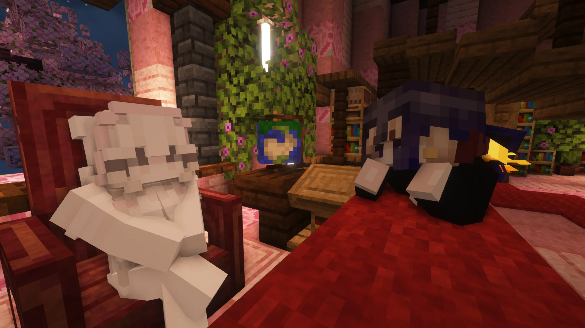

NoTka - |
Майнкрафт сервер. Поринь у світ контенту та творчості!
mc.notka.pp.ua
Офлайн
Сервер офлайн
| NoTka Ванільний Український сервер
| Приєднатися на сервер:
discord.gg/y4vEfn7qS9
Версія: 26.1.2